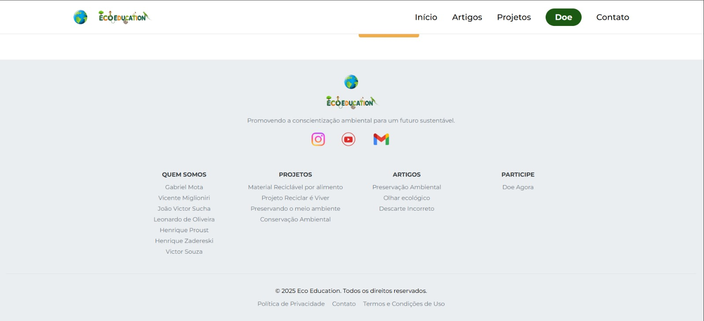
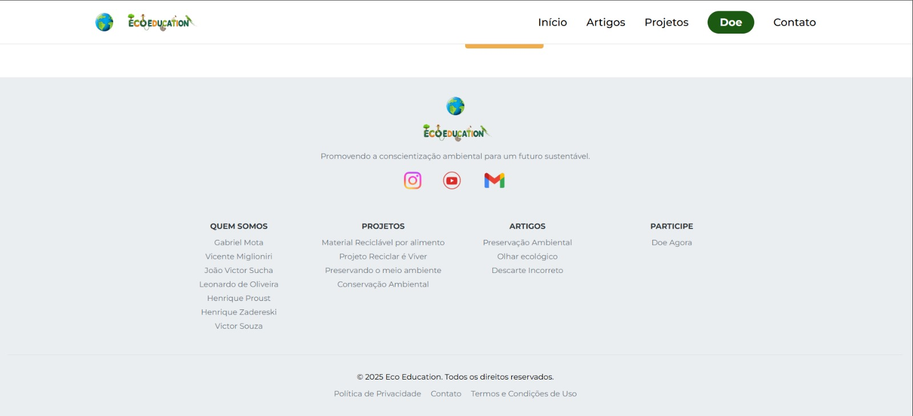

Experiência Criativa
Com a proposta de uma oficina de projetos, estamos com a mão na massa desde o primeiro dia, aprendendo a criar aplicativos de verdade na prática! Nessa jornada, não só aprendemos a codificar, mas também a inovar e pesquisar, sempre com uma visão global.
Criação de Jogos com Construct
Criação de um jogo em equipe utilizando o Construct. Cada integrante assumiu papéis como programador, designer ou redator, colaborando para criar um jogo de qualidade.


Programação Multimídia com Processing
Desenvolvimento de um aplicativo multimídia no Processing com Java, abordando temas como sustentabilidade e extensão universitária.
Programação Web (HTML, CSS, JS)
Criação de um site web com foco em sustentabilidade, validado com público-alvo, para informar e colaborar com a preservação da natureza.

 

Raciocínio Algorítmico
Introdução ao pensamento computacional e desenvolvimento de algoritmos em Python. Aprendemos a usar variáveis, estruturas de controle e de dados, preparando a base para disciplinas futuras.
Jogo: Pedra, Papel e Tesoura
Desenvolvido em Python, com múltiplos modos de jogo, histórico de partidas e tratamento de erros.

Jogo: Batalha Naval
Implementado em Python com menus, IA, controle de turnos e mais de 500 linhas de código, aplicando lógica, matrizes e funções modularizadas.

Outros Projetos Relevantes
Filosofia e IA
Produção de um vídeo sobre o futuro das profissões com o avanço da IA, inspirado em Harari e Hawking, incluindo entrevistas com especialistas da área.
Sistemas Ciberfísicos (ESP-32)
Projeto de uma balança inteligente com ESP-32 para monitorar e prevenir sobrecarga em tempo real, utilizando sensores, atuadores e lógica de histerese.